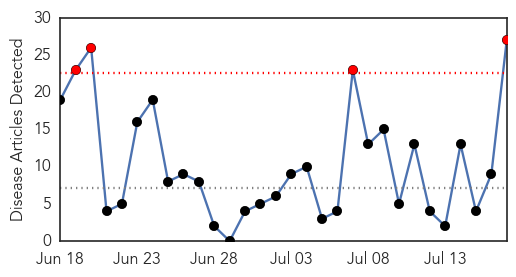
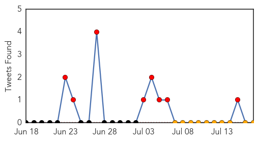

Chikungunya
30-Day Web Trend
4 alerts, 0 warnings

30-Day Twitter Trend
0 alerts, 0 warnings

Article Locations
Article Confidences

Top Articles:
- 1.000
- Florida reports first locally acquired case of mosquito-borne virus
- 1.000
- Florida Man First to Get Chikungunya in the US
- 0.999
- Hotels receiving constant updates on Chikungunya
- 0.999
- Threat rises in U.S. from mosquito-borne chikungunya virus
- 0.999
- US reports first locally acquired chikungunya cases
- 0.999
- First case of chikungunya virus contracted in U.S.
- 0.999
- 1st case of locally acquired chikungunya reported in Florida
- 0.999
- First cases of mosquito virus reported in US
- 0.999
- Chikungunya virus now spreading in U.S.
- 0.998
- First chikungunya cases acquired in the U.S. reported
- 0.998
- Chikungunya virus spreads locally in Florida for first time
- 0.998
- Mosquito virus makes its way from Caribbean
- 0.998
- 1st Case of Locally Acquired Chikungunya Virus Reported in U.S.
- 0.997
- First locally acquired case of chikungunya reported in US
- 0.997
- First Locally Acquired Infection Reported in Fla.
- 0.997
- US gets first local case of mosquito-borne chikungunya
- 0.993
- First Chikungunya Cases Acquired In U.S. Reported
- 0.993
- Chikungunya virus: It's coming for us, but not quite yet
- 0.990
- Puerto Rico declares chikungunya epidemic
- 0.988
- Chief Medical Officer Confirms Jamaica’s First Case of Chikungunya
- 0.983
- Country to know by weekend if suspected case is chikungunya
- 0.975
- Florida confirms two locally-acquired chikungunya cases
- 0.974
- Jamaica’s first case of chikungunya confirmed
- 0.936
- South Florida gets first locally acquired chikungunya cases
- 0.807
- Chikungunya scares away Haiti aid groups
- 0.572
- Trinidad and Tobago's Newsday
- 0.559
- Dogs carry kissing bug disease in Texas, Latin America
Top Tweets:
- 0.665
- RT: FLORIDA DEPARTMENT OF HEALTH CONFIRMS FIRST LOCALLY ACQUIRED CASES OF CHIKUNGUNYA FEVER http://t.co/Y9H3vWC86d
- 0.607
- RT: Florida Department of Health confirms first locally acquired cases of Chikungunya Fever: http://t.co/9bgtkpE8Og CHIKV via …
Ebola
30-Day Web Trend
17 alerts, 8 warnings

30-Day Twitter Trend
8 alerts, 0 warnings

Article Locations

Article Confidences

Top Articles:
- 1.000
- Ebola crisis in West Africa deepens; 539 dead
- 1.000
- Ebola Update: Largest Outbreak on Record Causes 603 Deaths
- 1.000
- Sierra Leone News: Hand sanitizer does not prevent Ebola virus-Harold Thomas « Awoko Newspaper
- 0.999
- Ivory Coast blocks refugees amid Ebola fears
- 0.999
- Ebola Outbreak is One of Africa's Worst
- 0.996
- Death toll from West Africa Ebola outbreak jumps to 603 - WHO
- 0.992
- Race Against Time To Control Ebola Outbreak
- 0.991
- Fearmongering GOP congressman warns immigrant children carry Ebola virus
- 0.985
- ICT Director calls for human resources in Ebola fight « Awoko Newspaper
- 0.980
- Hampden parking woes lead to call for strict limits
- 0.980
- French blogger fined €1,500 for writing negative restaurant review
- 0.980
- Meet the man who claims to be 'selfie inventor'
- 0.980
- Police say transgender woman was killed near Lake Ashburton
- 0.980
- Police investigate murder-suicide in Hughesville
- 0.980
- Md. state trooper shoots pit bull after bite
- 0.980
- Snowden to lose seat on Annapolis housing board
- 0.980
- Hogan, many Democrats work the crowd at annual clam bake
- 0.980
- Police say transgender woman killed near Lake Ashburton
- 0.980
- Should you trust hospital ranking lists?
- 0.971
- The virus detective who discovered Ebola in 1976
- 0.959
- Ebola Wreaks Economic Woe In West Africa
- 0.950
- Hon Mustapha Brima Cries in Parliament over Ebola Death Toll
- 0.925
- 17 July 2014: World - ECHO Flash Events - Philippines
- 0.879
- Mali: Preparedness for Ebola DREF Operation N° MDRML010 - Mali
- 0.852
- President Koroma Receives Donation from State Lottery and Gift from Saudi Arabia
- 0.563
- Jonathan pledges $3.5m to stop Ebola spread in West Africa
- 0.550
- Liberia-Ebola survivor reintegrated into society
- 0.533
- Poor Oversight Catches Up with High-Security Infectious Agent and Disease Labs
Top Tweets:
-
No tweets found for Jul 17, 2014